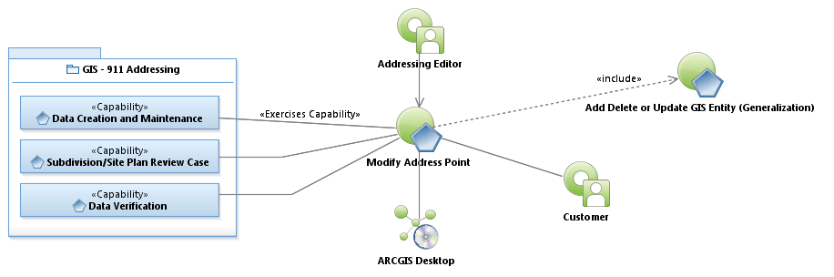
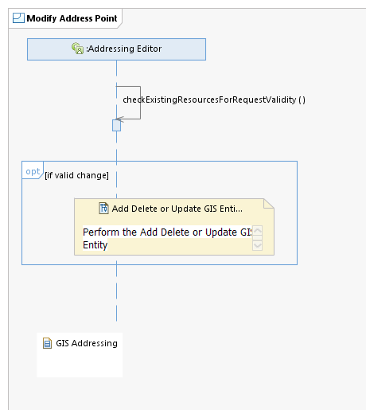

Use Case Model: Modify Address Point
Architect: Aaron Brown, IT Enterprise Architect, Senior
Date Last Modified: 6/01/2012
User Review: Lee Kinser, Sean McClurkan, Stephanie Jenson
Date: 06/01/2012
Determine if an Address Point should be modified, and make the change if necessary.

Use Case Model: Modify Address Point

Sequence Diagram:
Modify Address Point